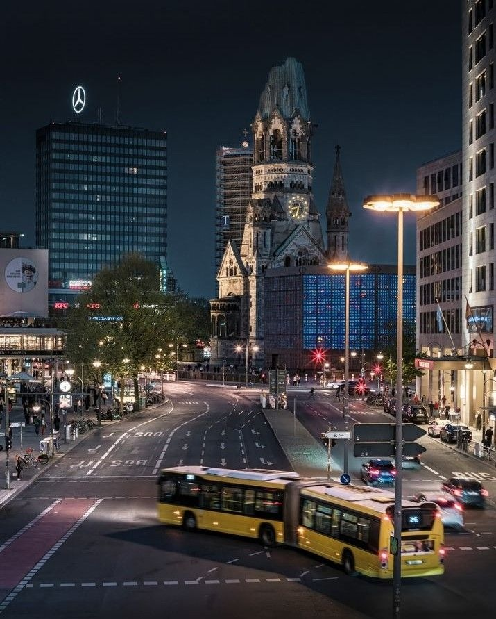
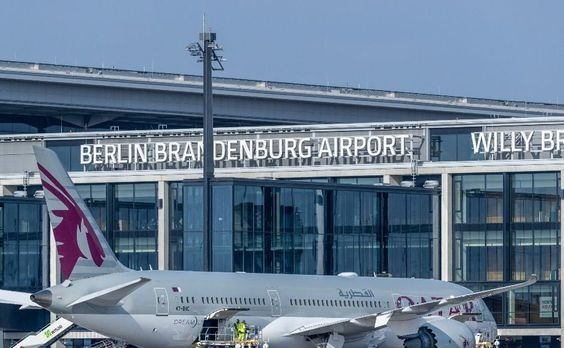
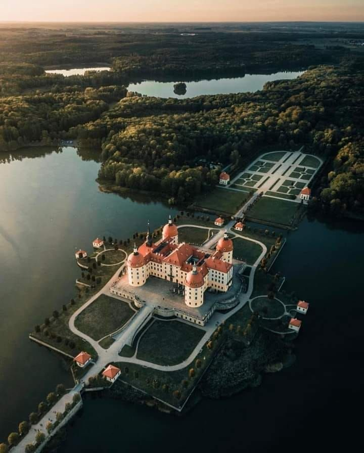
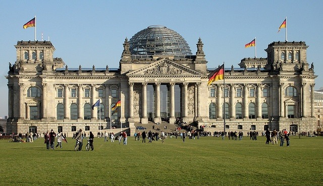
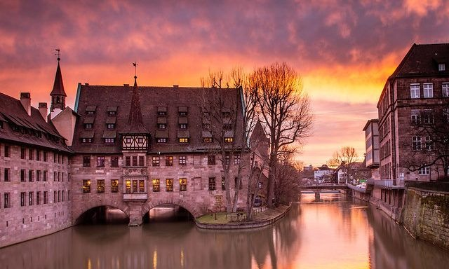
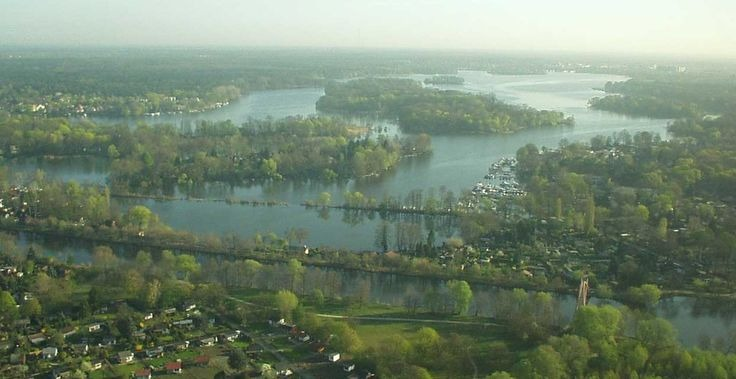
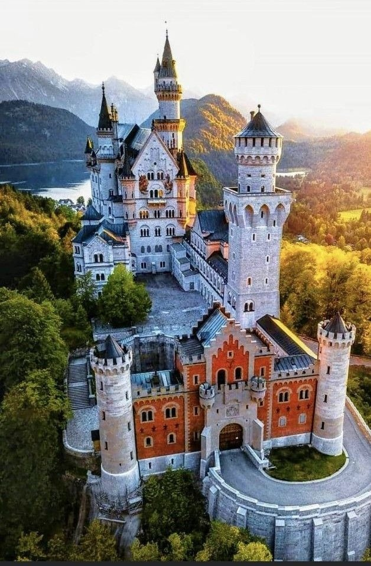
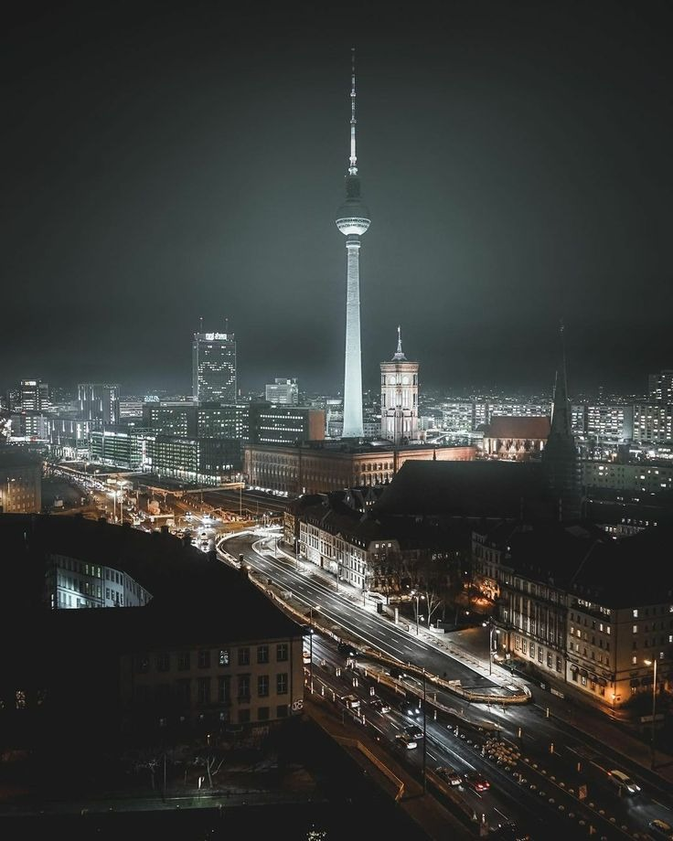

Germany is a land of infinite variety, where the heavy echoes of history, the serenity of ancient forests, and the pulse of ultra-modern cities exist in a fascinating, deliberate harmony. From the vibrant, multi-layered streets of Berlin to the romantic, mist-shrouded castles of the Bavarian Alps, each region of Deutschland tells a distinct and compelling story. It is a country that honors its complex past while boldly defining the future of design, engineering, and cultural expression. This exclusive guide takes you on a journey through 8 selected highlights—from world-famous icons like Neuschwanstein to the hidden urban oases of the capital. Whether you are exploring architectural marvels, relaxing by a pristine lake, or stepping into a fairytale landscape, these destinations showcase the very best of Germany's diverse and enduring spirit.

Standing in the heart of West Berlin on the famous Kurfürstendamm, the Kaiser Wilhelm Memorial Church (Gedächtniskirche) is one of the most poignant symbols of peace and reconciliation in Europe. The original church, a Neo-Romanesque masterpiece built in the 1890s, was severely damaged during a World War II air raid in November 1943. While much of Berlin was painstakingly rebuilt, the decision was made to preserve the jagged, scarred remains of the old spire as a permanent memorial—a "hollow tooth" that serves as a silent witness to the devastation of war.

The Berlin Brandenburg Airport (BER), named in honor of the former West Berlin mayor and Nobel Peace Prize winner Willy Brandt, represents modern Germany's commitment to connectivity and architectural clarity. Located in Schönefeld just south of the city limits, it finally unified the capital's air traffic under one roof. The main terminal (Terminal 1) is a model of modern German design—a massive, light-filled structure of glass, steel, and warm walnut wood that aims to provide a calm and dignified starting point for every journey.

Located just a short drive north of Dresden, Moritzburg Castle is one of Europe's most beautiful examples of Baroque architecture. Resting elegantly on a man-made island in the center of a tranquil lake, the castle’s four round towers and symmetrical yellow-and-white facades create a mirror reflection in the water that seems almost too perfect to be real. Originally built as a renaissance hunting lodge in the 16th century, it was transformed into this stunning "Pleasure Palace" by Augustus the Strong, the Elector of Saxony, in the 1700s.

The Reichstag building in Berlin is one of the world's most iconic symbols of democratic governance. The historic 1894 structure, with its heavy stone facade and classical columns, was famously destroyed by fire in 1933 and again damaged during the Battle of Berlin in 1945. Following the reunification of Germany, the building underwent a revolutionary transformation by architect Norman Foster, who added a massive, high-tech glass dome that has become a centerpiece of the Berlin skyline.

Nuremberg (Nürnberg) is a city that perfectly encapsulates the charm of old-world Germany while thriving as a center of modern industry. The historic Old Town, surrounded by five kilometers of massive stone walls, is a labyrinth of cobblestone streets, half-timbered houses, and impressive medieval churches. The city is divided by the gentle Pegnitz River, which is bridged by picturesque spans like the Hangman’s Bridge (Henkersteg) and flanked by historic warehouses that tell the story of Nuremberg's long history as a wealthy manufacturing and trading hub.

Located in the northwest district of Reinickendorf, Lake Tegel (Tegeler See) is the second-largest lake in Berlin and a cherished secret for those who love nature within the city limits. It offers a stunning landscape of seven islands, numerous small bays, and crystal-clear water that feels a world away from the urban noise of Alexanderplatz. The lake has been a popular destination for Berliners since the 19th century, when the Greenwich Promenade was first established as a place for elegant Sunday strolls under the shade of ancient trees.

Rising like a white limestone dream from the rugged foothills of the Bavarian Alps, Neuschwanstein Castle is perhaps the most famous building in the world. Commissioned by King Ludwig II of Bavaria in 1869 as a private retreat and a monumental tribute to the composer Richard Wagner, it was intended to be a theatrical stage set brought to life. Its soaring turrets, elegant arches, and dramatic location inspired Walt Disney's Sleeping Beauty castle, cementing its image as the ultimate fairytale palace in the global imagination.

Ascending 368 meters above the central Alexanderplatz, the Berlin TV Tower (Fernsehturm) is the tallest structure in Germany and the undisputed center-point of the capital's skyline. Built by the GDR government in the late 1960s to demonstrate the superiority of socialist engineering, it has since overcome its political origins to become a globally recognized icon of a unified and creative Berlin. Its sleek, rocket-like design and shimmering metal sphere give it a retro-futuristic charm that looks as if it were plucked from a vintage science fiction movie.
A Journey through Deutschland: Germany is a country that stays with you, leaving an indelible mark through its hospitality, its history, and its staggering beauty. From the quiet shores of Lake Tegel to the soaring heights of the TV Tower, from the scarred stones of a memorial church to the fairytale spires of Neuschwanstein, your German adventure will be a collection of moments that bridge the gap between the ancient and the avant-garde. We hope this guide inspires you to discover the heart of Europe for yourself. Gute Reise!
Every destination and accommodation is hand-selected to meet the highest standards of luxury.
Book directly with verified premium providers to ensure the best rates and exclusive perks.
Our worldwide presence ensures you have premium support wherever your journey takes you.
"Luxe Voyages didn't just book a trip; they crafted an unforgettable experience. Every detail was handled with unparalleled professionalism."